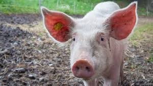
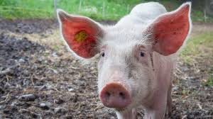

Truth Agro has been an existing farm for more than a year, rearing fishes and poultry birds
before expanding further into rearing and management of pigs, cattle, goat, sheep and snail.
Truth Agro is located in the South West region of Nigeria, Atiba Local Government,Oyo State,
operating on the following facilities; land,hutches,and fishing equipment.
Overtime, livestock management and production have proven to be a lucrative business in
Agriculture where fish and poultry farming is not an exception from this theory and their products
being popularly demanded in households, restaurants, supermarkets and various food selling
joints. Leveraging on this market demand, Truth Agro is bringing up a market strategy of
supplying them with our products closer to their doorsteps.
Targeting Lagos as a more demanding State for livestock products consumption, Truth Agro
is a wholesale farm that supplies food products to retailers and restaurants who are based in
Lagos. Our products will be neatly packaged and preserved with an oven-drying and freezing
method and in the process retaining the nutritive value of our products.
vision
The vision of Truth Agro is to be one of the leading commercial livestock farms in Nigeria by
embracing innovation and technology towards a sustainable future.
Truth Agro is a farm located in the Southwest region of Nigeria (mainly Oyo and Lagos State)
specializes in the production of catfish (clarias gariepinus) and poultry birds ( layers, broilers
and turkey). The main economic significance of the business is to contribute towards narrowing
down the fish and poultry demand-supply gap deficit in Nigeria.
Target Market:
Since food is an autonomous consumption, the farm will cater to Restaurants, Retail sellers,
Supermarket, Fast food sellers and households.
Goals:
goal is to be a well known Agro Empire that doesn't run out of stock thereby producing
livestock products throughout the season.
TRUTH FUTURE
In the next 5 years, Truth Agro will scale-up her Production of Catfish to 50000 fishes and
also create value adding through various preservation techniques like oven drying and freezing
to increase the shelf life of our product.
Increase in the number of the poultry birds by 5000 units whereby the layers will be managed
for egg production, Broilers and Turkey managed for meat production.
Expansion of livestock products to piggery, cattle, goat, sheep and snail mainly for their meat
Production and their popular demand during festive season.
Also as a means of generating revenue, Truth Agro will expand to the production of arable
crops that includes leafy vegetables like; Amaranthus (Efo tete), Jute leaf (Ewedu) and fruit
vegetables like; tomato, red pepper and bell pepper. Also as a middleman for various crop
products.
layers
Layer(s): Raising 100 units of layers before it starts laying eggs takes about 3 months, each
birds lay an egg daily for about 1 year under normal conditions after which they are being sold
off before restocking.
Catfish: Producing Catfish before harvesting takes between 4 months to 8 months depending on
the desired table size. Raising 2000 catfishes with a stocking density of 700-1000 per pond
while feeding them with pellets with varying protein content.
Broiler(s): Raising 30 pieces of broilers takes about 6 months before they can be sold off.
Raising from a day old requires technical expertise like brooding, drug and vaccine
administration, feeding etc. When adequately fed, a more prominent result is obtained.
Turkey(s): Raising 15 turkeys takes 8 months till maturity. Turkey has high demand for protein
in their feed, giving them these help them to gather flesh easil
Improve the lives of millions.
Change yours forever.
More than 2800 team mates share our same vision, goals and passion.
With offices in Warsaw, Barcelona, Munich, Istanbul, Rome, Rio, Bologna ,
Mexico City and Curitiba, our search for great talent never stops.
TRUTH MARKET RESEARCH
The market opportunity for fish farming is very huge. It has been discovered that for the
past five years, Nigerians consume nearly 2.5 million tons of fish and poultry birds per year and
with the country’s growing population ensures demand will continue to boom. Demand far
outweighs current national production, making it necessary for increased local livestock
production. This is given that the demand is far higher than supply. The fish industry involves the
cultivation and marketing of fish in a controlled environment for all or part of their life cycle while
poultry management is the brooding and management of chicks till maturity stage. The demand
for catfish and poultry birds is increasing due to the ever-increasing health consciousness of
consumer thereby increasing the Per capita consumption of fish in Nigeria geometrically
Production of catfish and poultry birds is one business that demands care and technical
expertise, the main expenditure in the production cycle is the fish feed and the staff salary. It
takes a life cycle of about 4-8 months to get to maturity when fed adequately.
The catfish farm is to produce table size fishes available for purchase through preparation of
fish ponds with a minimum of 500 fishes for each pond, stocking of the pond with fishes, and
feeding of the fishes for 4-8 months then harvesting of the fishes. While the production of
matured poultry birds is achieved by stocking with 4-5 birds per hutches and feeding for 6-8
months. Poultry birds reared mainly for their egg production (layers) can be raised using the
same methods as other poultry birds but placed on a different diet and under a more biosecure
facility.
Post harvesting processing of the catfish and poultry birds will be done using various
suitable methods and after which they will be transported to the sales outlet.
For customer
subtitle
You can, book a visit and solve any AGRO-related doubt.
Deliver an exceptional patient experience in your contry
Cattle
Cattle are large, domesticated, cloven-hooved herbivores.
They are a prominent modern member of the subfamily Bovinae
and the most widespread species of the genus Bos.
Mature female cattle are referred to as cows and
mature male cattle are referred to as bulls.


 
